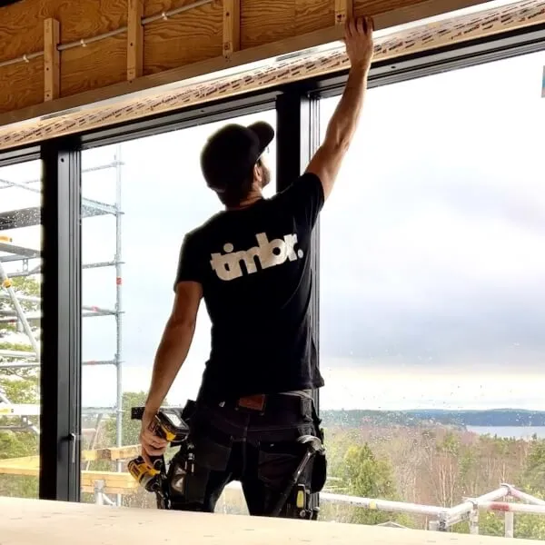

Snickare
Renovering och projektledning i stort och smått. Hela vår verksamhet började en gång i tiden med en rad beställningar av lägenhetsrenoveringar och allt vi gjort sedan dess har varit en möjlighet att utveckla och förbättra våra tjänster. På TIMBR renoverar, restaurerar och vårdar vi allt från lägenheter till villor och hela kontorsplan. Det är ett ständigt pågående arbete som sakta gör Stockholm med omnejd nyare, finare och säkrare, en nöjd kund i taget.
